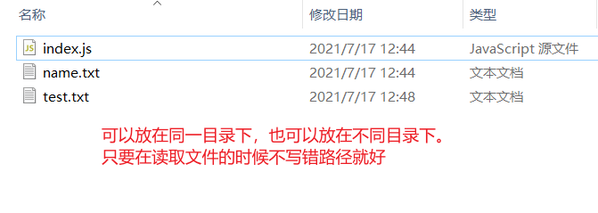

日常的学习笔记，包括 ES6、Promise、Node.js、Webpack、http 原理、Vue 全家桶，后续可能还会继续更新 Typescript、Vue3 和 常见的面试题 等等。
高阶函数
高阶函数的特点
- 一个函数的参数是一个函数（回调函数就是一种高阶函数）
- 一个函数返回一个函数
我们平时会用到的 reduce 、 map 等方法就是高阶函数。
before 方法
假设我们现在有这样一个场景，我们写了一个业务代码，而现在我们需要扩展当前的业务代码。
1 | function say() { |
我们需要在业务代码之前对其进行相应的处理，但是我们如果对业务代码的封装方法进行处理，会使整个代码变得很难处理和复用。
所以我们需要在 Function.prototype 原型链上绑定一个 before 方法 ，使业务代码调用前，先调用一下这个方法。实现对扩展代码进行统一的管理。
1 | Function.prototype.before = function (callback) { |
（注：我们这里的回调函数需要使用箭头函数，原因是箭头函数不存在 this 指向，他会查找上级作用域的 this 指向）
这样我们在使用业务代码前，就可以直接调用其 回调函数。
1 | let beforeSay = say.before(function () { |
这里符合高阶函数的两个特点，所以其也是一种 高阶函数。
最终达到了我们想要的效果，业务代码 与 扩展代码 实现了分离。
同时，我们也可以进行传参。
1 | function say(a, b) { |
after 方法
假设现在有这样一串代码，我们需要根据传递的参数来判断何时执行函数。
1 | let newFn = after(3, function () { |
上面我们传入了一个 3，并传入了一个自定义函数。在第三次时，执行了我们的自定义函数。
接下来我们来完成 after 函数。
1 | function after(times, callback) { |
同样是利用 闭包 的思想，完成了函数的封装。
上述代码同样符合 高阶函数 的特点，所以这也是一种高阶函数。
函数柯理化
首先，我们可以先看一个这样的需求案例。
假设我们现在需要对几个数进行求和运算，可能平时我们会直接用下面这个函数进行封装。
1 | function sum(a, b, c, d, e) { |
如果我们对传递的参数进行分别传递呢？
1 | sum(1, 2)(3)(4, 5); |
这个时候，我们就无法再用上面的函数进行运算了。
我们需要用到一个全新的高阶函数，函数柯理化。
1 | const curring = (fn, arr = []) => { |
整体思路其实就是将后续传入的所有参数，拼接成一组完整的参数，最终实现 函数柯理化。
异步并发问题
假设现在有多个异步并发请求，我们该如何同时获得最终结果呢？
这里我们会用到 Node 中的 fs 模块。
1 | let fs = require("fs"); // file System |
这是一个用来 操作文件 的模块。
随后我们可以在其子目录下创建两个 .txt 文件，随便往里面写一些内容用来测试。

然后我们来使用 readFile 直接操作文件。
1 | fs.readFile("./name.txt", "utf8", function (err, data) { |
这样我们就模拟了两个异步操作。
现在我们想将这两个结果直接放到一个变量中。
1 | let allVal = {}; |
我们可以看到输出结果是空的，原因是这两个读取操作是异步的。
那么我们该如何获取这个结果呢？
我们有如下几个解决方法
- 模拟一个 cb 方法并创建一个计数变量 index_，每次执行完一个异步方法后，都在 _index 上加 1。
1 | let index = 0; |
这样写会有一个问题，就是当我们需要调用的异步方法过多时，会十分难以操作，同时我们还需要创建一个额外的全局变量。
利用上面的 after 方法 的思路
1
2
3
4
5
6
7
8
9
10function after(times, callback) {
return function () {
if (--times === 0) {
callback();
}
};
}
let cb = after(2, function () {
console.log(allVal);
});利用闭包的思想，将回调函数存储到堆内存里。直到触发时，再输出结果。
这样我们就完成了异步并发问题的处理，最优的选择就是利用闭包的方式，也就是上面的 _第二种_。
两种设计模式
发布订阅模式
首先，发布订阅模式分为两个部分，分别是 on 和 emit，同时我们还包含一个存储属性 arr。
- on 就是把一些需要用到的函数维护到一个数组中
- emit 就是将数组中的函数依次执行
- arr 用来对函数进行存储
1 | let event = { |
这样，我们可以用这种设计模式来进行异步操作了。
我们还是用上述异步操作的例子。
1 | let fs = require("fs"); // file System |
下面我们来进行一下异步存储操作，依次输出我们想要的结果。
1 | // 绑定输出函数到 on 上，以便我们对结果进行观察 |
我们可以用这种设计模式的开发思想，完成多种需求的开发。
观察者模式
首先，这种设计模式既然被称为观察者模式，那么肯定就存在一个 观察者 和一个 被观察者。观察者 需要放到 被观察者 中，被观察者 的状态发生变化，会通知 _观察者_。（注：Vue 的双向绑定的实现原理使用的就是 _观察者模式_）
其内部也是基于 发布订阅模式 实现的，所以我们平时会将 观察者模式 和 发布订阅模式 放到一起理解。
我们可以通过模拟一个宠物与主人之间的状态关系的例子，来进一步理解一下这个设计模式。
1 | // 观察者模式 |
本篇文章由莫小尚创作，文章中如有任何问题和纰漏，欢迎您的指正与交流。
您也可以关注我的 个人站点、博客园 和 掘金，我会在文章产出后同步上传到这些平台上。
最后感谢您的支持！